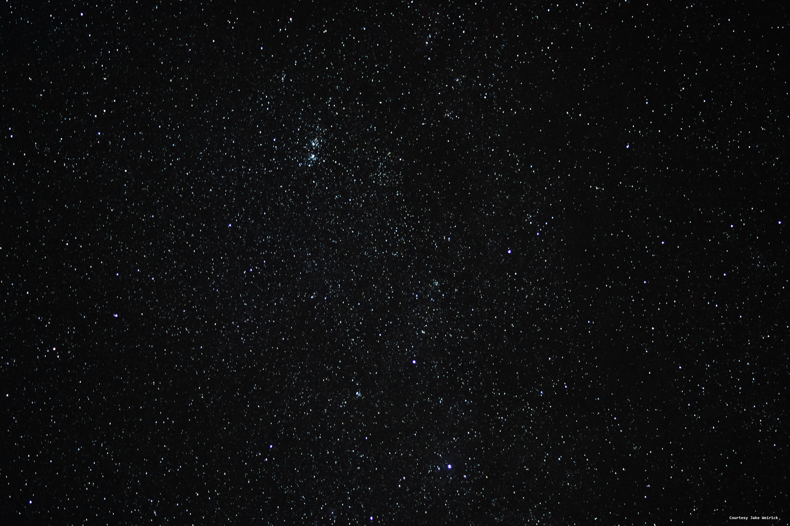
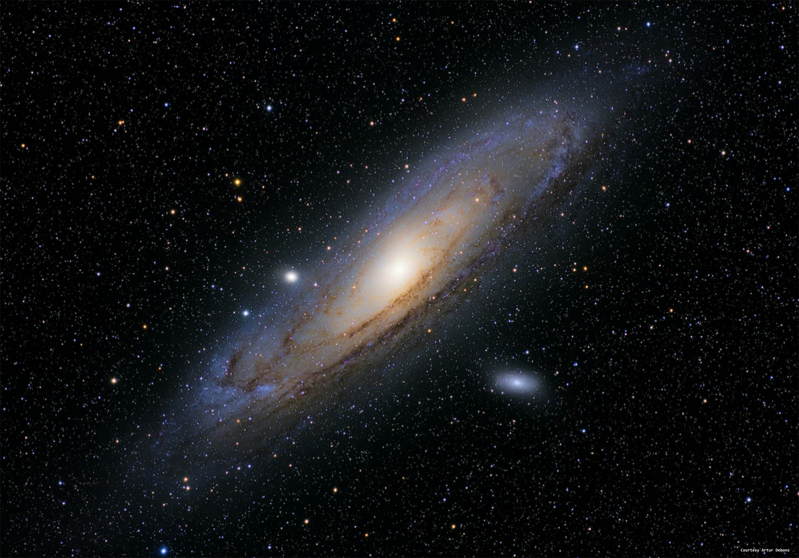
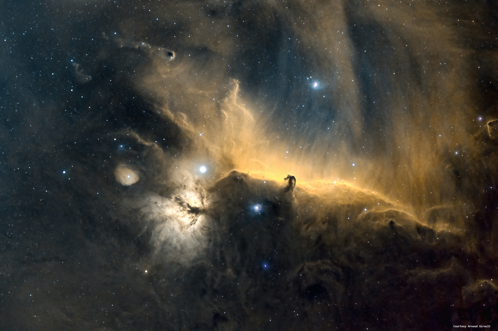

Astronomical Objects
by Mike Spaur
Here is a list of some common astronomical objects
-
 A Star Field - A Spiral Galaxy
 A Spiral Galaxy - A Globular Star Cluster

A Globular Star Cluster - A Dark Nebula
 A Dark Nebula
For more details about nebula checkout Wikipedia Nebula Information.